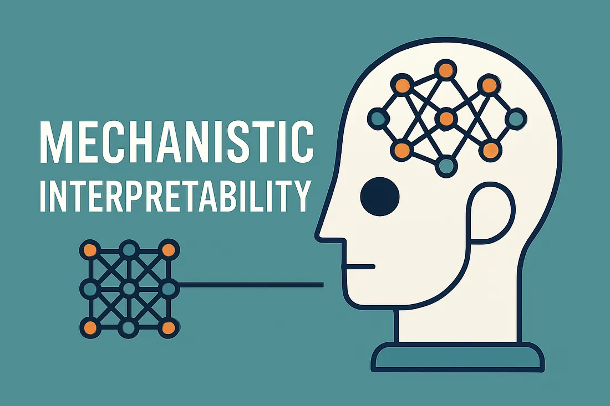
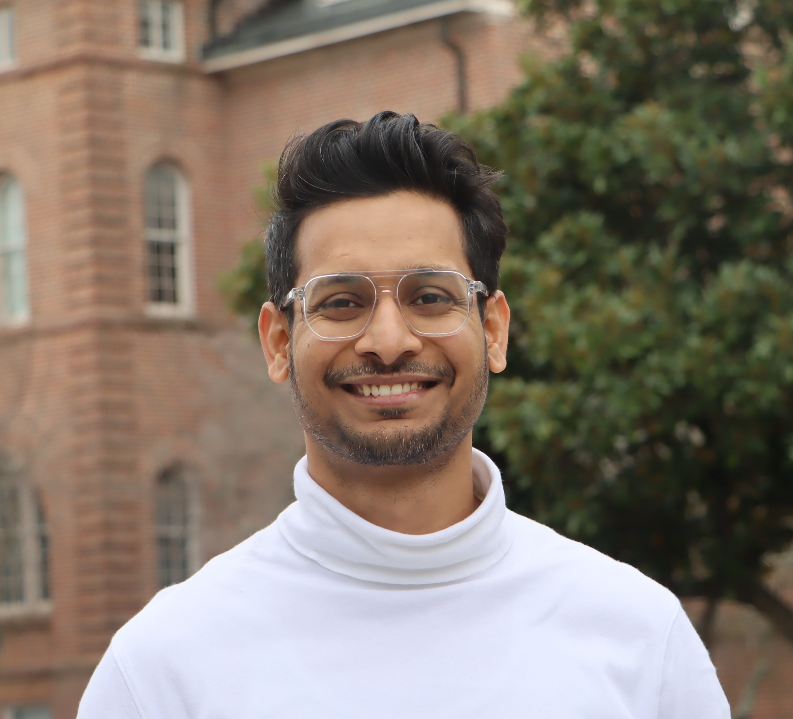
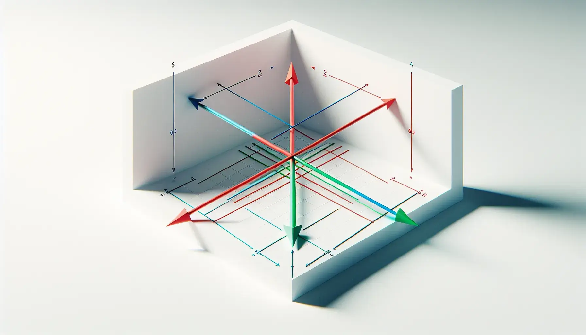

Model Interpretability and Steering
Exploring sparse autoencoders to interpret task-specific internal model representations and identify steering vectors.

AI Researcher
PhD in Computer Science
I am an AI researcher with a strong focus on interpretability, socio-technical system design, and challenges surrounding their scalable and responsible deployment. I completed my Ph.D. in Computer Science at NC State University under the advisement of Distinguished Professor Munindar P. Singh. My dissertation combined language models and multiagent social simulations to analyze online news discourse and its influence on social media users.
My current research focuses on three key areas. Model Interpretability and Steering, which focuses on understanding and controlling the internal representations of machine learning models to make their decisions more transparent, reliable, and aligned with human intent. Self-supervised Representation Learning to develop methods to learn meaningful representations from unlabeled data by leveraging intrinsic patterns, enabling useful generalizations with minimal supervision. Multi-Agent Social Simulations in designing and analyzing interactions between autonomous agents in simulated environments to study social dynamics, emergent behavior, and collective decision-making.

Exploring sparse autoencoders to interpret task-specific internal model representations and identify steering vectors.

Exploring contrastive learning via concept vector subspace.
A simulation-based study investigating information diffusion in social networks and its influence on network topology.
I grew up in Varanasi, a city that quietly shaped how I see the world. From there, I moved to Bangalore for undergrad, and eventually to the United States for my master's and PhD—following curiosity wherever it led.
I currently work as a Data Scientist at LexisNexis, working on Nexis+AI's Retrieval-Augmented Generation (RAG) system. I previously served as a Member of the Technical Staff at Oracle for over two years, and completed several Machine Learning Engineer internships at leading organizations, including Lenovo, Seagate, and Coupang, where I contributed to a range of applied AI projects. Additionally, I worked as a Research Fellow at the Laboratory of Analytic Sciences during the 2024 Summer Conference on Applied Data Science (SCADS).
I have been part of building communities as much as ideas. As the President and head of events for the Indian Graduate Student Association (IGSA) at NC State University, I worked with thousands of international students—helping them find their footing in a new country and fostering connections that provide support beyond the classroom. I contributed to the CASE (Centering AI in Society and Ethics) initiative and co-hosted several of its early webinars on AI in Society. My contributions have been honored by NC State University with awards such as Outstanding Teaching Assistant (2021) and Outstanding Student Leader (2023).
Outside of work, I'm a self-taught flutist, an avid reader, and a fitness enthusiast. I love being amidst nature and enjoy hiking and exploring the outdoors (my latest expedition is to hike in all US National Parks, and I have covered 12 so far).